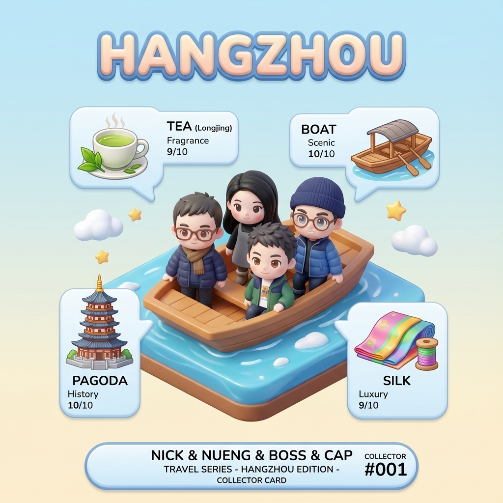
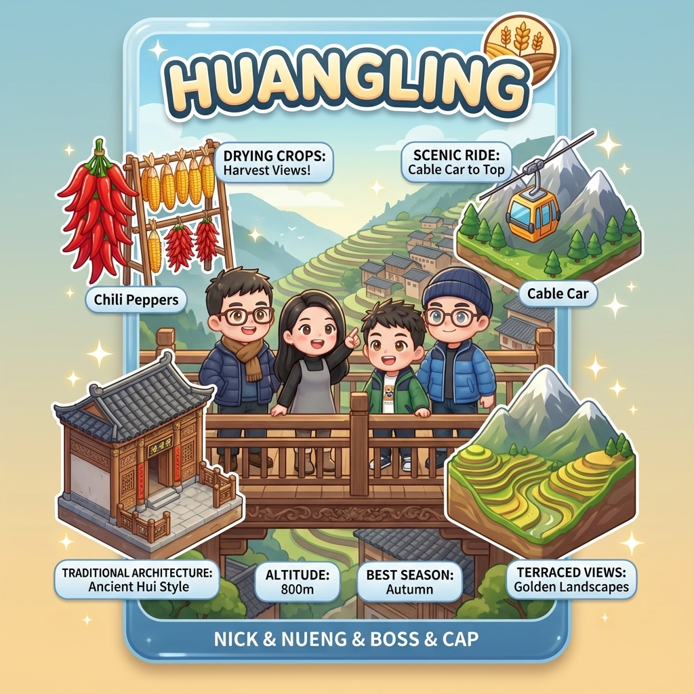
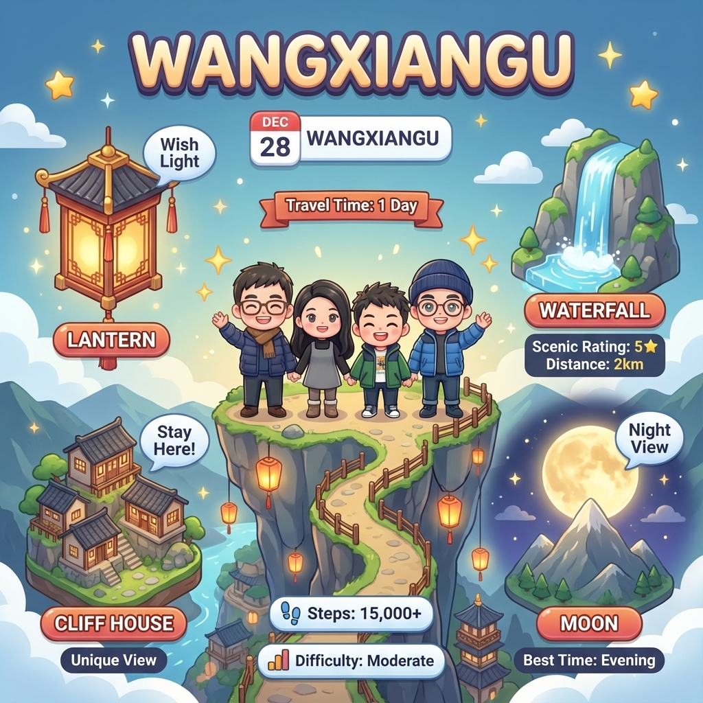
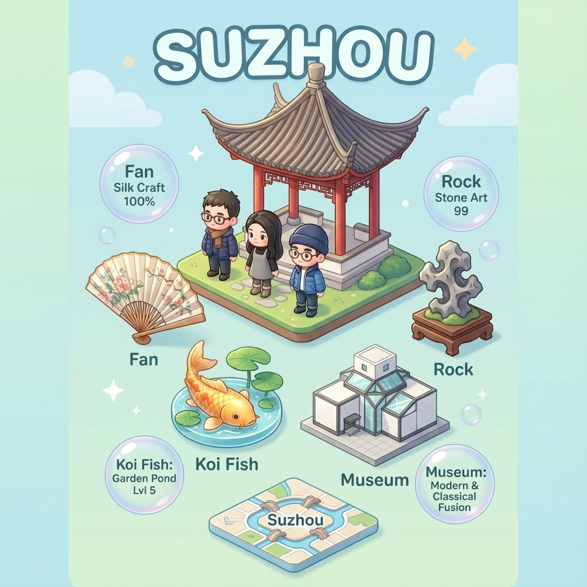
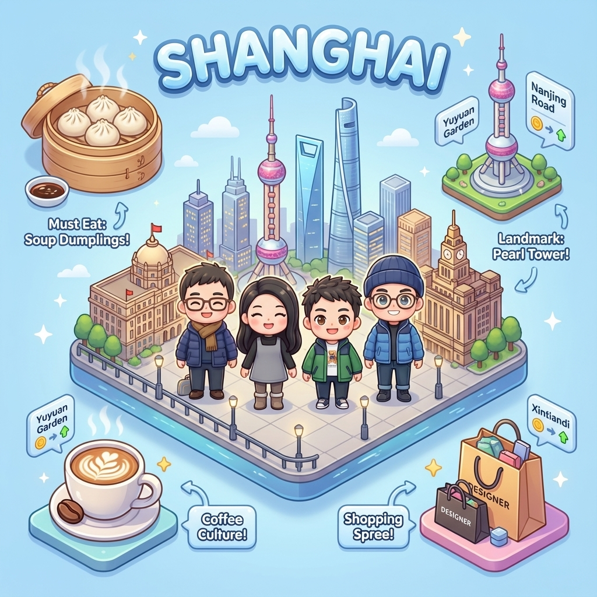
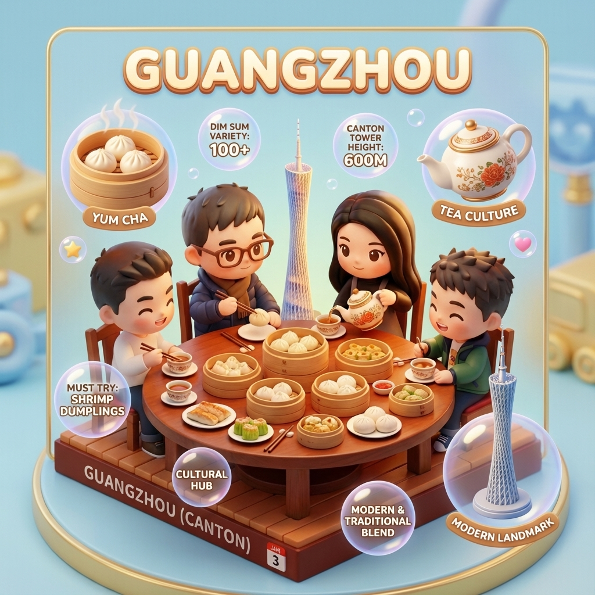

Hangzhouหางโจว 杭州
🏙️ Scenic View
📊 Quick Travel Guide
Collectable Travel Card: Hangzhou Edition
🌊 West Lake (Xi Hu)
UNESCO World Heritage site and the heart of Hangzhou. A scenic freshwater lake surrounded by temples, pagodas, gardens, and islands. Walk the famous Su Causeway and Bai Causeway.
🚇 How to Get There
Metro Line 1 to Longxiangqiao Station or Fengqi Road Station. Walking distance from Sofitel.
💡 Pro Tips
Rent a bike to circle the lake (~11km). Try the famous West Lake Fish in Vinegar Sauce nearby. Winter mornings can be misty - great for atmospheric photos!
🛕 Lingyin Temple
One of China's largest and most famous Buddhist temples, founded in 326 AD. Set against forested hills with stunning cliff-carved Buddha statues at Feilai Feng (Peak Flying From Afar).
🚌 How to Get There
Bus Y1, Y2, 7, or 807 to Lingyin Temple. Taxi from West Lake ~20 mins, ~¥30.
💡 Pro Tips
Visit Feilai Feng first before the temple. The 470+ Buddhist rock carvings date back 1,000+ years. Dress respectfully (shoulders covered).
🗼 Leifeng Pagoda
Iconic five-story tower on the south shore of West Lake. The original was built in 977 AD; rebuilt in 2002. Famous from the Legend of the White Snake. Offers panoramic lake views.
🚌 How to Get There
Bus Y1, Y2, Y6, Y7, Y9 to Jingsi Station. Or walk along West Lake south shore.
💡 Pro Tips
Take the escalator up (included). The basement displays the original pagoda ruins. Night lighting makes it magical after dark.
🏮 Hefang Ancient Street
Historic pedestrian street dating back to the Southern Song Dynasty. Traditional architecture, local snacks, tea shops, silk stores, and the famous Huqingyu Tang Traditional Chinese Medicine Museum.
🚇 How to Get There
Metro Line 1 to Dinganchao Station, Exit C. 10-min walk east of West Lake.
💡 Pro Tips
Try local snacks: Dingsheng Gao (sticky rice cake), dragon beard candy, and osmanthus-flavored treats. Good for souvenir shopping.
🍵 Longjing Tea Village
Birthplace of China's most famous green tea. Rolling hillside tea plantations, traditional tea houses, and the China National Tea Museum. Learn about tea culture and sample fresh Longjing.
🚌 How to Get There
Bus 27 or Y3 to Longjing Village. Taxi from West Lake ~25 mins.
💡 Pro Tips
Winter is off-season for tea picking, but you can still buy and taste tea. Negotiate prices - locals often start high for tourists.
🦆 Xixi National Wetland Park
China's first national wetland park - a tranquil escape from the city. Winding waterways, traditional villages, bird watching, and boat rides through peaceful marshlands. Featured in the film "If You Are the One."
🚌 How to Get There
Bus 193, 310, 356 to Xixi Wetland. Or taxi ~30 mins from city center.
💡 Pro Tips
The park is huge - take the boat to cover more ground. Less crowded in winter but still beautiful. Bring binoculars for birds!
🏺 Liangzhu Archaeological Site
A remarkable 5,000-year-old UNESCO World Heritage Site revealing an advanced prehistoric civilization. Features ancient city ruins, elaborate jade artifacts, and evidence of early urban planning that predates China's recorded history.
💡 Pro Tips
One of China's most significant archaeological discoveries! The jade cong cylinders found here are national treasures. Perfect for history buffs.
🎭 Impression West Lake Show
A spectacular outdoor performance on West Lake directed by Zhang Yimou (Beijing Olympics director). Features hundreds of performers appearing to dance on water with stunning light effects and traditional music against the lake backdrop.
💡 Pro Tips
⚠️ Check if running in winter - may be suspended in cold/rain. Book VIP seats for unobstructed views. One of China's most famous outdoor shows!
🏯 Six Harmonies Pagoda
A magnificent 60-meter tall pagoda built in 970 AD, overlooking the Qiantang River. Originally served as a lighthouse to guide ships and calm the famous tidal bore. Offers panoramic views of the river and surrounding hills.
💡 Pro Tips
Climb all 13 stories for the best views! The pagoda appears 13 stories outside but only 7 inside - an architectural marvel. Less crowded than West Lake sites.
Huangling 篁岭
🏙️ Scenic View
📊 Quick Travel Guide
Collectable Travel Card: Huangling Edition
🏘️ Huangling Ancient Village
A 500-year-old cliff-side village with well-preserved Huizhou architecture. White walls, black tiles, and wooden galleries built into the mountainside. The iconic sun-drying displays continue year-round.
🚌 How to Get There
From Shangrao: Train to Wuyuan Station (~35-50 mins), then scenic bus to Huangling (~50 mins, ¥20). Or direct taxi ~2 hours.
💡 Pro Tips
Stay overnight in the village for sunset and sunrise photos. Winter means fewer tourists - enjoy peaceful walks. The cable car ride itself offers great views!
🌤️ Tianjie (Sky Street)
The main pedestrian street running through Huangling village at 500m elevation. Lined with traditional shops, tea houses, and local crafts. Glass-floored sections offer thrilling views down the cliff face.
💡 Pro Tips
Try the local osmanthus cake and wild honey. The glass-bottom viewpoint can be slippery - wear good shoes. Great spot for sunset photos!
🏔️ Mountain Viewing Platforms
Multiple viewing platforms scattered around the village offer stunning panoramic views of terraced fields, surrounding mountains, and the village architecture from different angles.
💡 Pro Tips
The east-facing platform is best for sunrise. Bring a tripod for long exposures of misty mountains. Winter mornings can be cold - layer up!
🌻 Terraced Fields
While famous for spring rapeseed flowers, the terraced fields remain photogenic year-round. In winter, the geometric patterns of the terraces contrast beautifully against bare trees and village rooftops.
💡 Pro Tips
December won't have the famous yellow rapeseed flowers, but winter landscapes can be equally stunning, especially with morning frost or mist.
Wangxiangu 望仙谷
🏙️ Scenic View
📊 Quick Travel Guide
Collectable Travel Card: Wangxiangu Edition
🏞️ Wangxiangu Scenic Area
A spectacular valley with towering cliffs, waterfalls, and traditional cliff-carved dwellings. The main attraction features wooden walkways along cliff faces and through caves, offering thrilling views.
🚌 How to Get There
From Shangrao: Direct bus ~1 hour (¥30). Or taxi/car share. Located in Guangfeng District.
💡 Pro Tips
Wear sturdy hiking shoes - trails can be steep and uneven. The cliff walkways require some fitness. Bring snacks as dining options are limited.
✨ Night Illumination Experience
THE signature experience! As dusk settles, warm lights outline the cliffside buildings creating an ethereal atmosphere. The contours of traditional architecture glow against the dark canyon - like a scene from a martial arts fantasy film!
💡 Pro Tips
Stay overnight to experience the full day-to-night transformation! The glow looks completely different from daytime. Bring a tripod for long exposure shots.
🌉 Glass Cliff Walkways
Heart-pounding glass walkways extending nearly 100 meters above the canyon floor! Walk on transparent platforms with dramatic views straight down to the valley below. Not for the faint of heart!
💡 Pro Tips
Wear shoe covers provided at entrance. Go early before crowds. The views are worth conquering your fear! Great for adventurous photos.
🏚️ Cliff-Carved Houses
Unique Gan-style dwellings built into the cliff face with earthen walls and dark grey tiles. Explore narrow alleys, discover unique shops selling lanterns and bamboo crafts, and sample local street food like hot noodles and silky tofu pudding.
💡 Pro Tips
If staying overnight, try to book a cliff-side room for a unique experience. Try the local tofu pudding (豆腐花) - silky smooth! Basic amenities but incredible atmosphere.
💧 Wangxian & Three-Tiered Falls
Multiple waterfalls cascade through the valley, including the dramatic Wangxian Waterfall and the stunning Three-Tiered Falls. Abundant rainfall in the region ensures constant streams and springs feeding crystal-clear pools perfect for photos.
💡 Pro Tips
Winter flow may be reduced, but pools remain scenic. Waterproof jacket useful for spray near falls. Best combined with the glass walkway visit.
Suzhou 苏州
🏙️ Scenic View
📊 Quick Travel Guide
Collectable Travel Card: Suzhou Edition
🏯 Humble Administrator's Garden
China's most famous classical garden and UNESCO World Heritage Site. Built in 1509, spanning 5.2 hectares with interconnected pools, pavilions, and rockeries. A masterpiece of Ming Dynasty landscape design.
🚇 How to Get There
Metro Line 4 to Bei Si Ta (North Temple Pagoda) Station, Exit 4. 10-min walk north.
💡 Pro Tips
Arrive at opening to enjoy peaceful gardens before tour groups. Get an audio guide (¥20) to understand the design philosophy. Allow 2+ hours to explore properly.
🦁 Lion Grove Garden
Famous for its extraordinary labyrinth of Taihu rockeries shaped like playful lions. Built in 1342 as a Zen Buddhist garden. The most fun and interactive of Suzhou's gardens.
🚶 How to Get There
5-minute walk from Humble Administrator's Garden. Easy to combine both.
💡 Pro Tips
Explore the rock maze - it's surprisingly challenging! Try to find all 9 lion-shaped rocks. Emperor Qianlong visited 6 times and loved it.
🏛️ Suzhou Museum
Designed by world-famous architect I.M. Pei (his final major project). A stunning fusion of traditional Suzhou architecture with modern design. Houses beautiful collections of paintings, calligraphy, and artifacts.
🚶 How to Get There
Adjacent to Humble Administrator's Garden (west side).
💡 Pro Tips
⚠️ Book free tickets on WeChat mini-program "苏州博物馆" at least a week ahead - very popular! The building itself is the highlight. Don't miss the rock garden.
🏮 Pingjiang Road Historic Block
An 800-year-old canal-side street that preserves the authentic atmosphere of old Suzhou. White-washed walls, arched bridges, tea houses, and boutique shops line the ancient waterway.
🚶 How to Get There
10-min walk south from Humble Administrator's Garden.
💡 Pro Tips
Try the famous Suzhou snacks: pine nut candy, pickled ginger, and osmanthus-flavored treats. Boat rides available ~¥30. Perfect for a relaxed evening stroll.
🐯 Tiger Hill
A historic site with 2,500 years of history, featuring the iconic leaning Yunyan Pagoda (1,060 years old - China's "Leaning Tower"). Known as the "Number One Mountain in Wu Region." Legends say a white tiger guarded the tomb of King He Lu here.
🚌 How to Get There
Tourist Bus Y1 or Y5 from Train Station. Or Metro Line 3 to Tiger Hill station.
💡 Pro Tips
The pagoda leans 3.5° - more than the Tower of Pisa! Su Dongpo said "Coming to Suzhou without seeing Tiger Hill is a lifelong regret."
🏮 Shantang Street
An ancient 1,100-year-old street built in 825 AD, stretching seven miles with preserved black-tile architecture. More authentic and less touristy than Pingjiang Road. Best experienced at night when beautifully illuminated!
🚇 How to Get There
Metro Line 2 to Shantang Street Station. Near Tiger Hill.
💡 Pro Tips
Take the 40-minute Shantang Canal boat ride at night - highly recommended for romantic ambiance! Less crowded than Pingjiang Road.
🚢 Grand Canal Cruise
Cruise along the UNESCO World Heritage Beijing-Hangzhou Grand Canal - the world's longest man-made waterway at 1,800km! See historic gates, traditional residences, and ancient bridges that have witnessed centuries of trade.
💡 Pro Tips
Night cruises offer romantic ambiance with lit historic buildings along the banks. Book at Shantang Street pier. This canal links Suzhou to Hangzhou!
🎭 Kunqu Opera Experience
Experience Kunqu Opera - a 600-year-old UNESCO Intangible Cultural Heritage art form and one of Suzhou's "Three Cultural Gems." Elegant performances with traditional music, elaborate costumes, and refined storytelling in historic garden settings.
💡 Pro Tips
Master of Nets Garden offers immersive night performances (May-Nov, 19:30-21:30) with traditional Hanfu costumes. Book ahead - very popular!
🧵 Suzhou Silk Heritage
Suzhou has 7,000 years of silk history! Visit Suzhou No.1 Silk Factory to see the full process: silkworm breeding, cocoon unwinding, silk reeling, and weaving. Suzhou embroidery ranks among China's "Four Famous Embroideries."
💡 Pro Tips
Also visit the Suzhou Silk Museum (free) for the full history. Great place to buy authentic silk products directly from the source!
Shanghai 上海
🏙️ Scenic View
📊 Quick Travel Guide
Collectable Travel Card: Shanghai Edition
🏛️ The Bund (Waitan)
Shanghai's most iconic waterfront promenade along the Huangpu River. Features 52 historic colonial-era buildings on the west side and spectacular views of the Pudong skyline across the river.
🚇 How to Get There
Metro Line 2/10 to Nanjing Road East Station, walk east. Or Line 2 to Lujiazui for Pudong side view.
💡 Pro Tips
🎆 **NYE Special**: Major crowds but worth it for New Year's countdown! Arrive early (5 PM) to secure a spot. The skyline light show is spectacular.
🏯 Yu Garden (Yuyuan)
A 400-year-old Ming Dynasty garden in the heart of Shanghai's old town. Classic Jiangnan-style architecture with the surrounding bazaar perfect for souvenirs, snacks, and experiencing old Shanghai.
🚇 How to Get There
Metro Line 10 to Yuyuan Garden Station, Exit 1.
💡 Pro Tips
Try Nanxiang xiaolongbao (soup dumplings) at the original shop in the bazaar. The garden is small but exquisite. Evening lanterns make the bazaar magical!
🛍️ Nanjing Road
The world's longest shopping district at 5.5km. The pedestrian section (East Nanjing Road) is a dazzling stretch of neon lights, department stores, and street performers leading to the Bund.
🚇 How to Get There
Metro Line 1/2/8 to People's Square, or Line 2/10 to Nanjing Road East.
💡 Pro Tips
Walk the ~1km pedestrian stretch from People's Square to the Bund. Watch out for tourist traps. The "train" tram is fun for kids/photos.
🍃 French Concession
Shanghai's most charming neighborhood with tree-lined avenues, colonial-era villas, trendy cafes, boutique shops, and excellent restaurants. Perfect for a leisurely stroll.
🚇 How to Get There
Metro Line 1/7 to Changshu Road; Line 10/13 to Xintiandi; Line 9/12 to Jiashan Road.
💡 Pro Tips
Walk along Wukang Road, Anfu Road, or Yongkang Road for the best vibes. Stop at Fuxing Park for people-watching. Great area for brunch!
🗼 Shanghai Tower
The tallest building in China (632m) and second tallest in the world. The observation deck on the 118th floor (546m) offers unparalleled views of Shanghai. The world's fastest elevators zoom up in 55 seconds.
🚇 How to Get There
Metro Line 2 to Lujiazui Station, Exit 6. Walk through the skyscraper district.
💡 Pro Tips
Book tickets online in advance! Clear weather is essential for views - check forecast. The interactive exhibits inside are also excellent.
🎨 Tianzifang
A maze of narrow alleyways in the former French Concession filled with art studios, craft shops, cafes, and bars. Traditional shikumen (stone gate) houses converted into a bohemian enclave. Truly comes alive at night!
🚇 How to Get There
Metro Line 9 to Dapuqiao Station, Exit 1.
💡 Pro Tips
Get lost on purpose - the best finds are down random alleys! Good for unique souvenirs. Can get very crowded on weekends.
🚢 Huangpu River Cruise
See the Bund's historic architecture and Pudong's futuristic skyline from a unique perspective on the Huangpu River. Evening cruises offer spectacular illuminated views of both shores - a Shanghai must-do!
🚇 How to Get There
Piers along the Bund (Shiliupu Pier most popular). Metro to Yuyuan or Nanjing Road East.
💡 Pro Tips
Book in advance for NYE - extremely popular! The upper deck offers best views but can be cold in winter. Combine with a Bund walk before or after.
📸 Wukang Road
Shanghai's most photogenic street! A tree-lined avenue with diverse Western architectural styles dating back to 1849. The iconic Wukang Mansion (flatiron building) is Instagram-famous. Cafes, boutiques, and historic villas abound.
🚇 How to Get There
Metro Line 10/11 to Shanghai Library. Short walk to Wukang Road.
💡 Pro Tips
The Wukang Mansion (corner of Huaihai Road) is the most photographed spot. Walk the full 1km length! Great cafes for brunch along the way.
🪷 Jade Buddha Temple
An active Buddhist temple housing two exquisite white jade Buddha statues imported from Burma - a seated Buddha (1.95m) and a reclining Buddha. A serene spiritual oasis amid the urban chaos of Shanghai.
🚇 How to Get There
Metro Line 7/13 to Changshou Road, Exit 5.
💡 Pro Tips
Photography prohibited inside Buddha halls. Visit the vegetarian restaurant inside for authentic Buddhist cuisine. Dress respectfully (shoulders covered).
🎨 M50 Creative Park
A former textile factory transformed into Shanghai's premier contemporary art hub. Home to 130+ international artists, galleries, and studios. Features graffiti art, abstract installations, and cutting-edge exhibitions.
🚇 How to Get There
Metro Line 1 to Shanghai Railway Station, Exit 7. 15-min walk west.
💡 Pro Tips
Great alternative to mainstream tourist spots! Perfect for art lovers and Instagram photos. Check for exhibition openings. Many galleries closed Mondays.
🏘️ Zhujiajiao Water Town
The "Venice of Shanghai" - a 1,700-year-old water town with 36 stone bridges, winding canals, and preserved Ming-Qing architecture. Just 1.5 hours from downtown, it offers an escape to traditional Jiangnan life.
🚇 How to Get There
Metro Line 17 to Zhujiajiao Station (~1.5 hours from People's Square).
💡 Pro Tips
Take a boat tour through the canals. Try the famous zongzi (rice dumplings) and fresh roast pork! Skip weekends if possible - extremely crowded.
Guangzhou 广州
🏙️ Scenic View
📊 Quick Travel Guide
Collectable Travel Card: Guangzhou Edition
🏝️ Shamian Island
A tranquil sandbank island with well-preserved European colonial architecture from the 19th century. Tree-lined boulevards, French and British buildings, and a peaceful escape from the bustling city.
🚇 How to Get There
Metro Line 1 to Huangsha Station, Exit D. Cross the bridge to the island.
💡 Pro Tips
Perfect for a morning stroll before your flight. The White Swan Hotel has a nice lobby cafe. Great for colonial architecture photography.
🗼 Canton Tower
Guangzhou's iconic 600m tower, nicknamed "Xiaomanyao" (small waist) for its hourglass shape. Features observation decks, the world's highest horizontal Ferris wheel, and sky drop rides.
🚇 How to Get There
Metro Line 3 to Canton Tower Station, Exit A.
💡 Pro Tips
Book tickets online for discount. The bubble tram Ferris wheel is unique! Night views of the Pearl River are stunning.
🥟 Dim Sum Experience
Guangzhou is THE birthplace of dim sum culture. Experience authentic "yum cha" (drinking tea) with endless varieties of dumplings, buns, and small dishes. A must-do in the city!
💡 Pro Tips
Famous spots: Lian Xiang Lou (莲香楼), Guangzhou Restaurant (广州酒家), Diandude (点都德). Go early - locals queue before 7 AM! Must-try: har gow, siu mai, char siu bao.
🏛️ Chen Clan Ancestral Hall
Known as the "Pearl of Lingnan Architecture," this 125-year-old masterpiece features the highest form of wood, stone, and brick carving in Guangdong. 19 buildings, 9 halls, and 6 courtyards showcase traditional crafts. Houses the Guangdong Folk Art Museum.
🚇 How to Get There
Metro Line 1 to Chen Clan Academy Station, Exit D.
💡 Pro Tips
Look up at the incredible roof decorations! The Shiwan pottery figurines are famous. See embroidery, ivory carvings, and canton enamel exhibits inside.
🚢 Pearl River Night Cruise
Cruise China's third-longest river and see Guangzhou's illuminated skyline at its best! The 70-minute evening cruise passes Canton Tower, historic bridges, and the lit-up waterfront creating a magical atmosphere.
🚇 How to Get There
Tianzi Pier (Metro Line 6 to Haizhu Square) is most popular.
💡 Pro Tips
Perfect way to end your Guangzhou day before heading to the airport! Upper deck offers best views. Both banks are "charming when lights put on."
⛲ Flower City Square
Guangzhou's largest square and the heart of Tianhe District's CBD. Features spectacular fountain shows, direct views of Canton Tower, and is surrounded by modern landmarks including the Opera House and Guangdong Museum.
🚇 How to Get There
Metro Line 3/5 to Zhujiang New Town Station.
💡 Pro Tips
Check the fountain show schedule! Great views of Canton Tower at night. Walk to the tower along the riverside (~15 min) for evening photos.
🪷 Temple of Six Banyan Trees
A nearly 1,500-year-old Buddhist temple housing the iconic Flower Pagoda - Guangzhou's tallest at 57.6 meters with thousands of colorful glazed tiles. The pagoda contains Buddha statues on each floor and offers city views from the top.
🚇 How to Get There
Metro Line 1 to Gongyuanqian Station, Exit I. 10-min walk.
💡 Pro Tips
The pagoda appears 9 stories outside but has 17 inside! Named after six banyan trees planted by poet Su Dongpo. Combine with nearby Guangxiao Temple.
⛪ Sacred Heart Cathedral
Southeast Asia's largest Gothic cathedral, nicknamed "Stone House" because it's constructed entirely of granite! Built 1861-1888, it features stunning stained glass windows and twin spires reaching 58 meters - a surprising European gem in Guangzhou.
🚇 How to Get There
Metro Line 6 to Yide Road Station, Exit A.
💡 Pro Tips
The only all-granite Gothic church in East Asia! Dress respectfully. Check for service times - not open during mass. Near Beijing Road shopping.
⛰️ Baiyun Mountain
Known as the "First Beauty in Guangzhou," this 427-meter peak offers a green escape from the city. Features hiking trails, cable car rides, temples, and panoramic city views. Named after the white clouds that often shroud the summit.
🚌 How to Get There
Bus 24, 38, 127 to Baiyun Mountain. Cable car reduces hiking to ~2 hours round trip.
💡 Pro Tips
Take cable car up, walk down! Popular with locals for morning exercise. Great for a half-day escape if you have time during your layover.